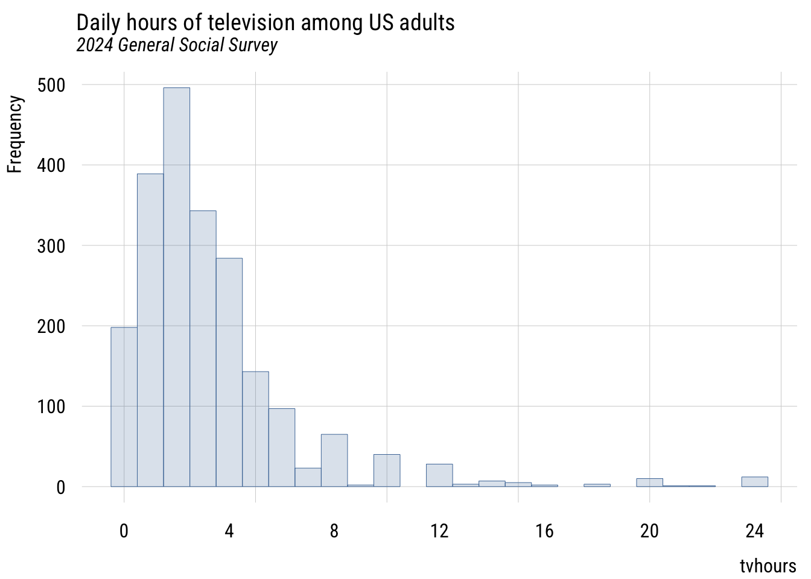
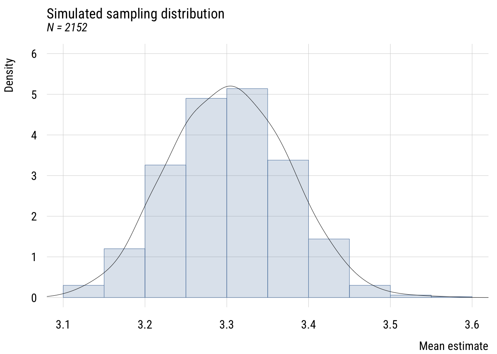
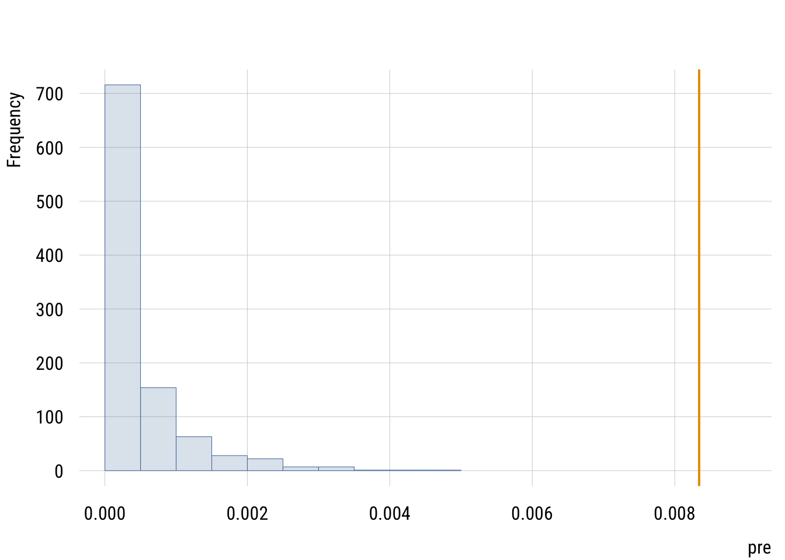

library(dplyr)
library(tidyr)
library(broom)
library(tinyplot)
tinytheme("ipsum",
family = "Roboto Condensed",
palette.qualitative = "Tableau 10",
palette.sequential = "agSunset")Chapter 4
Overview
Goals
We’re going to look at sampling distributions and testing null hypotheses.
Set up
Load packages and set theme.
Sampling distributions
Load saved GSS data.
gss2024 <- readRDS(file = here::here("data", "gss2024.rds")) |>
haven::zap_labels()Get some skewed data to show that we get a normal sampling distribution for the mean (with a big enough sample) no matter what the shape of the underlying distribution. We’ll use the GSS classic, tvhours.
d <- gss2024 |>
select(tvhours) |>
drop_na()
plt(~ tvhours,
data = d,
type = type_hist(breaks = seq(-.5, 24.5, 1)),
main = "Daily hours of television among US adults",
sub = "2024 General Social Survey",
xaxt = "n",
xlim = c(-.6, 24.6))
axis(1, at = seq(0, 24, 4),
labels = seq(0, 24, 4),
tck = 0,
lwd = 0)
Consider this sample a population for now and take repeated samples from it. First step is to write a function that grabs a sample and computes the mean.
get_sample_mean <- function(n) {
d |>
slice_sample(n = n, replace = TRUE) |>
summarize(m = mean(tvhours)) |>
as.numeric()
}Now I like to make a simulation “skeleton” that I can plug results into.
sims <- tibble(
sim_number = 1:1000
)Now I add the sampled means to the skeleton.
sims <- sims |>
rowwise() |> # do separately by row
mutate(m = get_sample_mean(n = 2152)) # vary the NNow I can plot the results.
plt(~ m,
data = sims,
type = type_hist(freq = FALSE),
ylim = c(0, 6),
main = "Simulated sampling distribution",
sub = "N = 2152",
ylab = "Density",
xlab = "Mean estimate")
plt_add(~ m,
data = sims,
type = type_density(bw = "SJ"),
col = "black")
Null hypothesis
Setting up the null model
Null hypothesis: the average American adult in 2024 watches 3 hours of TV per day. By subtracting 3 from the observed value, we can make it so the null hypothesis is 0. That makes it easy to use lm(y ~ 0) to set up the null model.
d <- d |>
mutate(tvdev = tvhours - 3)
m0 <- lm(tvdev ~ 0, data = d)
m1 <- lm(tvdev ~ 1, data = d)
sse0 <- deviance(m0)
sse1 <- deviance(m1)
observed_pre <- (sse0 - sse1) / sse0
observed_pre[1] 0.008343581The SSE is improved by estimating \(\beta_0\), but was it improved more than we’d expect by chance?
Creating a null distribution
Here’s a quick example where we make data where the null hypothesis is TRUE. Then we can use it to check whether we could get numbers that big by chance.
fake_data <- tibble(tvhours = rnorm(2152, mean = 3, sd = 3.3))
fake_data <- fake_data |>
mutate(tvdev = tvhours - 3)
m0 <- lm(tvdev ~ 0, data = fake_data)
m1 <- lm(tvdev ~ 1, data = fake_data)
sse0 <- deviance(m0)
sse1 <- deviance(m1)
(sse0 - sse1) / sse0[1] 0.0008511838Convert this idea to a function so we can do this many times. The basic idea is to simulate data where the null is true, then calculate the PRE (which won’t be exactly zero because of sampling variability).
calc_null_pre <- function() {
null_data <- tibble(tvdev = rnorm(2152, 0, 3.3))
m0 <- lm(tvdev ~ 0, data = null_data)
m1 <- lm(tvdev ~ 1, data = null_data)
pre <- (deviance(m0) - deviance(m1)) / deviance(m0)
return(pre) # this returns the observed PRE from that simulation
}
Note
We could create a better null distribution here by using a different distribution than the normal for our fake tvhours data. As you saw earlier the data itself is actually NOT normally distributed. We could use a count distribution but we’re not ready for that!
Create a skeleton and append 1000 null PRE simulations.
null_sims <- tibble(sim_number = 1:1000) |>
rowwise() |>
mutate(pre = calc_null_pre())The test
The idea is to compare the real world to the world implied by the null hypothesis. So we’ll show how the OBSERVED PRE compares to the distribution of NULL PREs.
plt(~ pre,
data = null_sims,
type = "hist",
xlim = c(0, .009))
plt_add(type = type_vline(v = observed_pre),
col = "#E69F00",
lwd = 2)
Based on the formula in the book, what F would that be equivalent to?
fstat <- (observed_pre / 1) / ((1 - observed_pre) / (nrow(d) - 1))
fstat[1] 18.09805F-distribution with numerator df = 1 and denominator df = 2151. The dotted line is the critical value and the solid line is the observed value (wayyyy above that).
Show code
df1 <- 1
df2 <- 2151
alpha <- .01
f_obs <- 18.1
f_crit <- qf(1 - alpha, df1, df2)
x_max <- 20
# grid for the curve
x <- seq(0, x_max, length.out = 2000)
y <- df(x, df1 = df1, df2 = df2)
# main curve
plt(y ~ x,
type = "l",
main = "F(1, 2151)",
xlab = "F",
ylab = "Density",
xlim = c(0, x_max),
lwd = 2)
# critical line + observed line
abline(v = f_crit, lty = 2, lwd = 2) # dashed
abline(v = f_obs, col = "#E69F00", lwd = 2)
You can get F* (the critical value) from the book. Or we can do it using functions in R (as we did above). Remember that there is nothing sacred about 95% or 99% or any of that.
qf(.99, 1, 2151)[1] 6.646687You can also get the p-value from functions rather than from the book.
1 - pf(fstat, 1, 2151)[1] 2.188091e-05In any case, we will be rejecting the null hypothesis here!